| Time | Segment | On screen |
|---|---|---|
| 0:00–0:45 | 1. Introduction | Camera large, submission doc behind |
| 0:45–3:15 | 2. Roadmap call (Task 1) | Submission doc, Task 1 tables |
| 3:15–4:45 | 3. Spec (Task 2) | Submission doc, Task 2 |
| 4:45–7:45 | 4. Prototype demo (Task 3) | Prototype, click by click |
| 7:45–9:00 | 5. Close | Camera large |
On screen: camera visible, submission document open behind you. Speak slowly.
Hi, I’m [YOUR NAME]. Thanks for the chance to work through this. In the next few minutes I’ll walk you through the decision I made for SidelineReel, the spec behind it, and a working prototype I built, which I’ll click through live. At the end I’ll tell you a bit about me, why this role, and my salary expectations.
The short version: I read all five pieces of signal, and I’m recommending we build roster-tag confidence with a coach confirm step. I’m recommending we do not build livestreaming for Ridgeline this cycle, even though that’s the loudest request.
On screen: scroll the submission document to Task 1 → “How I read each piece of signal”.
| DO | SAY |
|---|---|
| Point at row 1 (Carla’s email). | Carla at Ridgeline wants livestreaming. She also says reels are why half her parents renewed. That’s a real stakeholder, but it’s her proposed solution, not usage evidence. |
| Point at row 2 (research summary). | 58% of parents say they want editing controls. But only 6% opened the editor and under 1% of those finished an edit. Behavior beats what people say in a survey. They do share, though: the Share button is used in 90% of recaps. |
| Point at row 3 (tickets). | Three of the five tickets are the same defect from three different clubs: the wrong kid in the reel. 14 versus 4, 1 versus 11, swapped digits. The icon and watermark tickets are single, low-severity reports. |
| Point at rows 4 and 5, then scroll to “The metric that looks better than it is”. | Sales pressure is real, a $180k renewal. And the dashboard says 92% share rate, but that only counts opened reels. About 30% are never opened, so across all generated reels it’s closer to 64%. The unopened ones are tied to late-night notifications and wrong-kid thumbnails. |
| Scroll to the “Ranked roadmap” table. | My ranking: one, roster-tag confidence and a coach confirm step. Two, quiet-hours delivery as a fast follow. Three, fix the share-rate metric. Four, discovery on remote viewing. Five, triage the watermark bug. |
| Scroll to “What I would NOT build next”. | What I’m not building: livestreaming this cycle, because it’s a different product with a different risk profile, especially with children on camera, and six weeks isn’t credible. I’m accepting some risk to that account and I’d flag that to leadership. I’m also not building more editor controls, because behavior says people don’t use the editor. |
| Scroll to the draft message to Carla. | For Sales, I wrote a concrete message: no livestream commitment before signups, but a fix for wrong-player clips, a pilot slot for Ridgeline, and a conversation about who on her board actually wants to watch live. The date is conditional on an engineering estimate. |
On screen: scroll to Task 2.
| DO | SAY |
|---|---|
| Point at “Outcome”. | The outcome is wrong-kid clips at or below 1% of delivered clips within four weeks. Step zero is a baseline audit, because we don’t actually know today’s error rate yet. |
| Point at the three-state table. | Every clip gets a confidence score and lands in one of three states: auto-confirmed, needs review, or unassigned. If a look-alike number is on the roster, like 4 and 14, the bar is stricter. Anything not confirmed is held and kept out of reels and thumbnails. |
| Point at “Where a human stays in the loop”. | Humans stay in at three points: the coach decides every ambiguous clip, parents can flag any clip, and someone on our side audits a hundred random auto-confirmed clips a week. At the send cutoff, anything unresolved is left out, never guessed. |
| Point at “In scope / Out of scope”. | Out of scope: face recognition, since these are minors, a new model, livestreaming, and editor changes. |
| Point at “Top two ways this fails”. | Two failure modes. One, the queue becomes a chore and reels come out thin; I’d catch it with held-rate and queue-completion alerts. Two, confident wrong matches slip through; I’d catch it with the weekly audit and “Not my kid” reports per thousand clips. |
On screen: switch to the prototype tab and load it fresh. Say:
This is a working prototype of the core flow. It uses simulated data, with a roster that deliberately includes look-alike numbers: 1 and 11, 4 and 14, 16 and 61.
| CLICK / DO | Nothing yet. Point at the three cards, then the table. |
|---|---|
| WHAT HAPPENS | You see 6 Auto-confirmed, 4 Need a quick check, 2 Can’t read, and a table of all 12 moments with status and assigned player. Held clips show “— held —”. |
| SAY | SidelineReel found 12 moments. Six are confident and go straight through. Four need a check and two can’t be read. The held ones are not in any reel yet. |
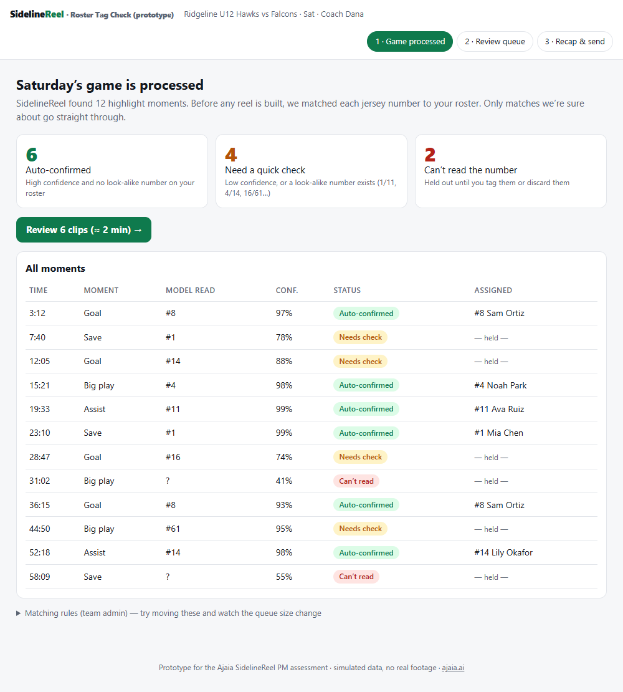
| CLICK / DO | Click “Matching rules (team admin)” at the bottom, then drag the middle slider (look-alike bar) to the far right and release. |
|---|---|
| WHAT HAPPENS | The counts at the top change: more clips move to “Need a quick check”. Decisions reset. |
| SAY | This is the tradeoff in the spec. A stricter bar means fewer wrong-kid clips but more work for the coach. We’d tune this from audit data. |
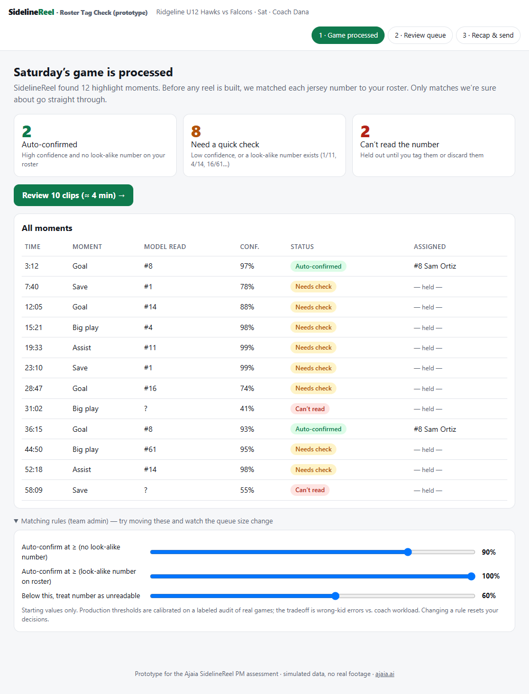
| CLICK / DO | Drag the slider back to 97% and release. |
|---|---|
| WHAT HAPPENS | Counts return to 6 / 4 / 2. |
| SAY | I’ll put that back to the default. |
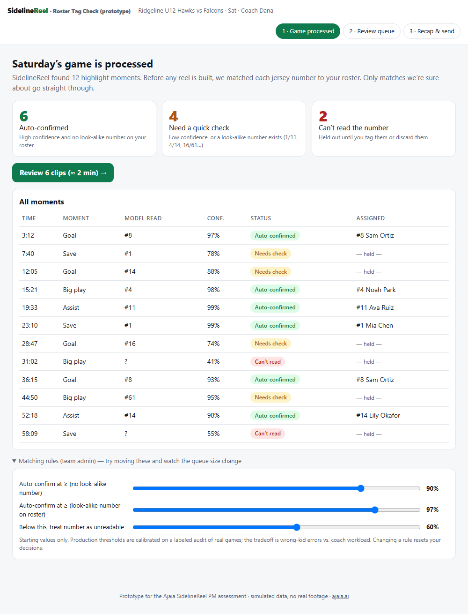
| CLICK / DO | Click the green button “Review 6 clips”. |
|---|---|
| WHAT HAPPENS | Screen 2 opens: a footage frame on the left, a yellow “why you’re seeing this” box, candidate buttons, a “Someone else” dropdown and a discard button. A progress bar sits above. |
| SAY | The coach sees one unclear clip at a time. This one is a #1, read at 78%, and there’s an #11 on the roster, so the system won’t trust it automatically. |
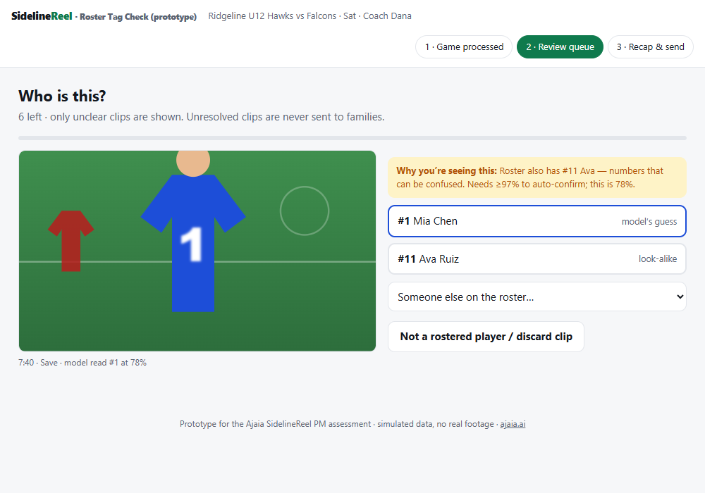
| CLICK / DO | Click “#1 Mia Chen”. |
|---|---|
| WHAT HAPPENS | A toast says “Tagged to #1 Mia Chen”, the progress bar moves, and the next clip appears: a goal read as #14 at 88%, with #4 as the look-alike. |
| SAY | One tap resolves it. This next one is the exact ticket from Ridgeline: a 14 versus a 4. |
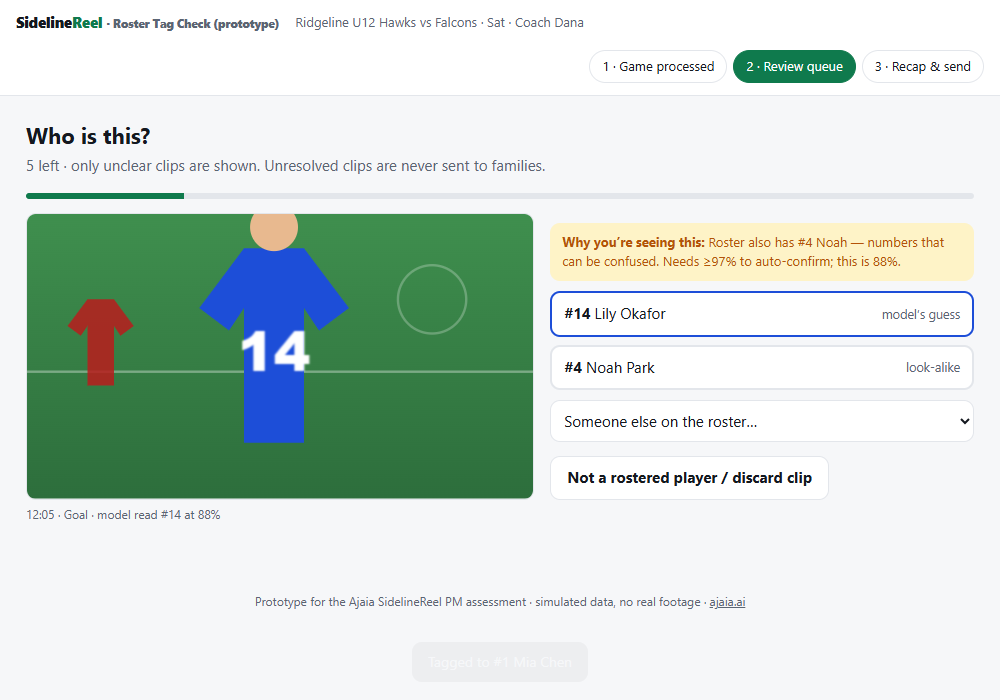
| CLICK / DO | Click “#14 Lily Okafor”. |
|---|---|
| WHAT HAPPENS | Next clip: a goal read as #16 at 74%, with #61 as the look-alike. |
| SAY | Swapped digits, like the Brightwater ticket. |
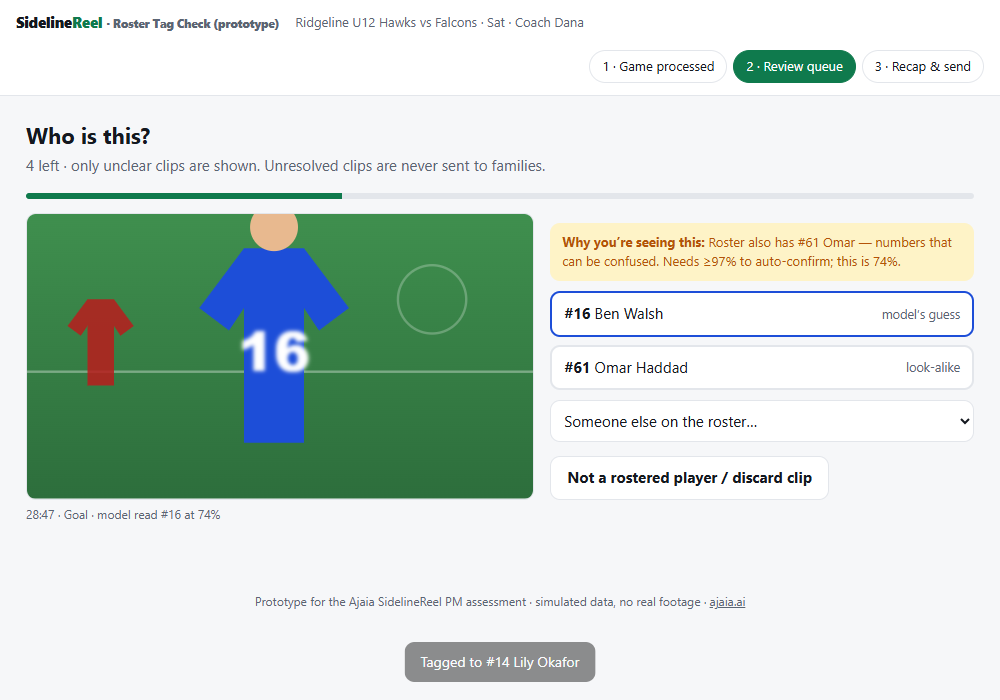
| CLICK / DO | Click “#16 Ben Walsh”. |
|---|---|
| WHAT HAPPENS | Next clip has a blurred “?” and no candidate buttons, because the model couldn’t read the number. |
| SAY | Now a clip the model couldn’t read at all. |
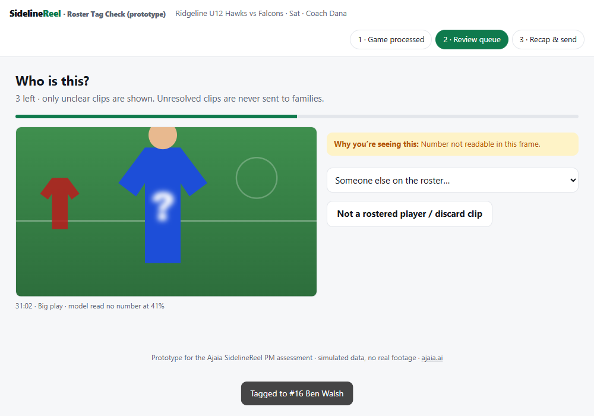
| CLICK / DO | Open the dropdown “Someone else on the roster…” and choose “#4 Noah Park”. |
|---|---|
| WHAT HAPPENS | Toast confirms the tag. The next clip appears: a big play read as #61 at 95%. |
| SAY | The coach recognizes the play and tags it manually. |
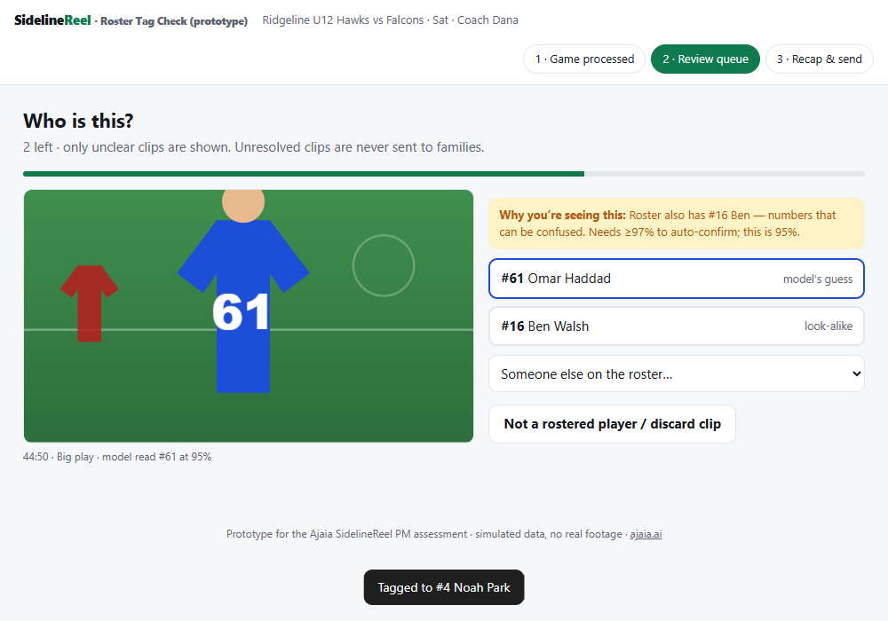
| CLICK / DO | Click “#61 Omar Haddad”. |
|---|---|
| WHAT HAPPENS | The last clip appears: another unreadable one at 55%. |
| SAY | Almost done. |
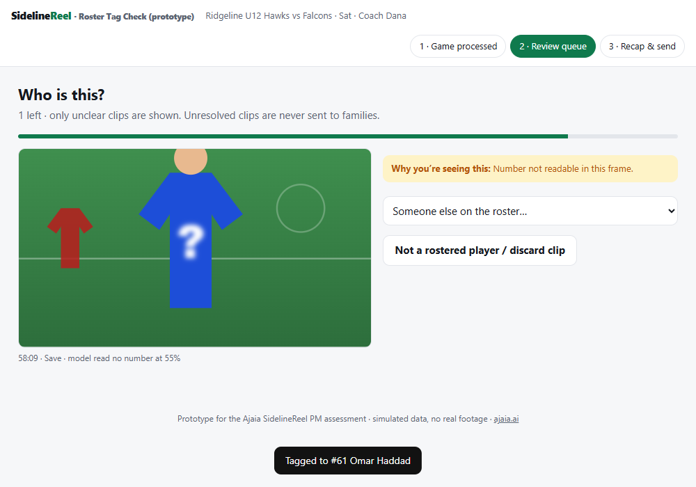
| CLICK / DO | Click “Not a rostered player / discard clip”. |
|---|---|
| WHAT HAPPENS | The queue shows a green “All clear” banner and a “Go to recap” button. |
| SAY | If the coach can’t tell, they discard it. A missing clip is better than a wrong one. |
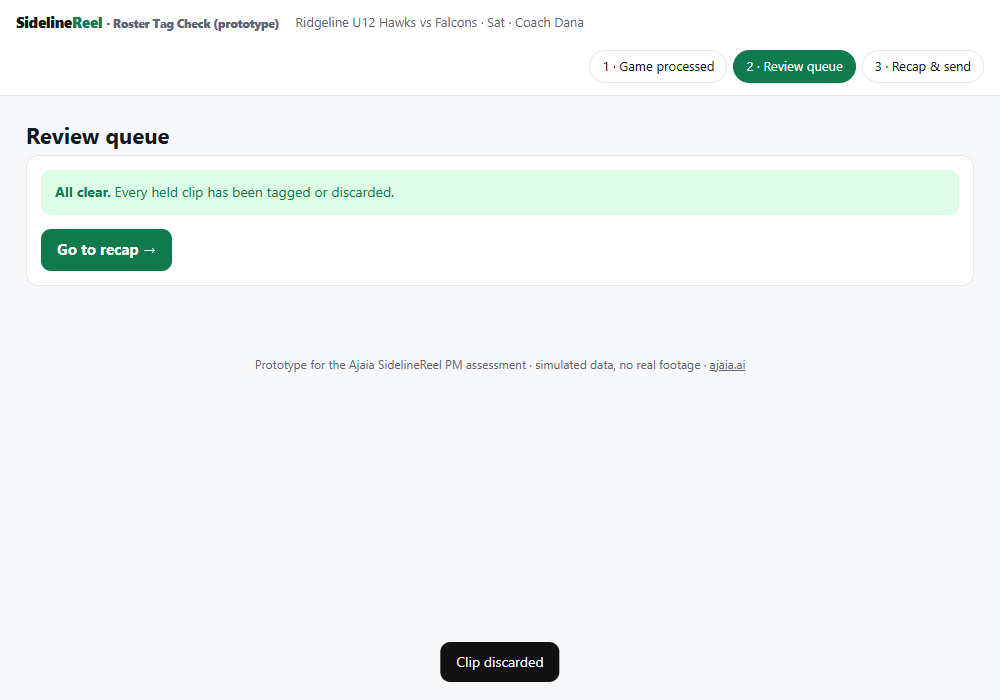
| CLICK / DO | Click “Go to recap →”. |
|---|---|
| WHAT HAPPENS | Screen 3: a green “Ready” banner and a card per player with thumbnails of confirmed clips only. |
| SAY | Every reel and every thumbnail only uses confirmed clips. That’s what stops the wrong-kid thumbnail. |
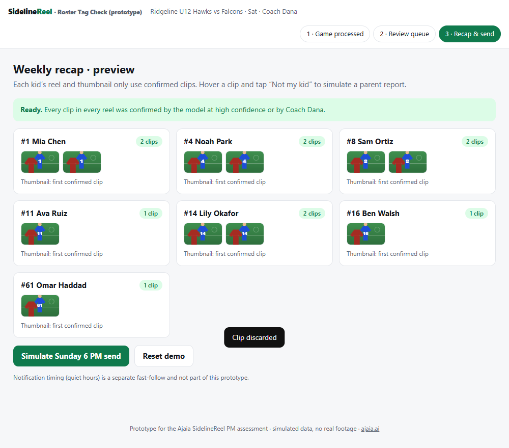
| CLICK / DO | Hover over any thumbnail, then click the small “Not my kid” button that appears. |
|---|---|
| WHAT HAPPENS | A toast says the clip was removed and sent back to the coach queue. The banner turns yellow: 1 clip is held. |
| SAY | Parents are the last safety net. One tap removes the clip from the reel and sends it back to the coach. |
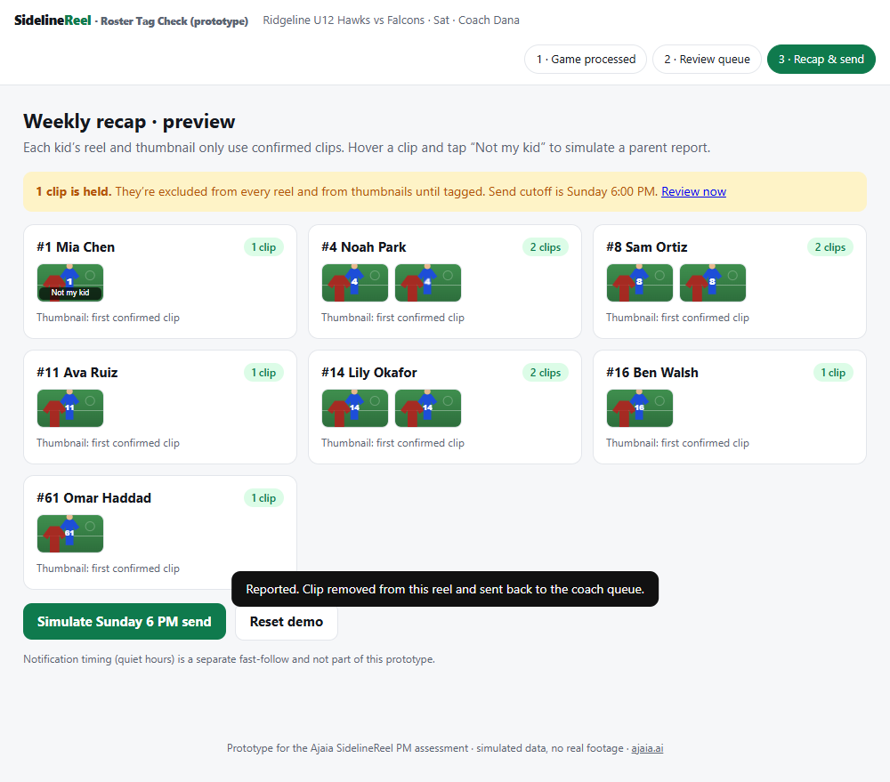
| CLICK / DO | Click “Review now” in the yellow banner, click the first candidate button, then click “3 · Recap & send” at top right. |
|---|---|
| WHAT HAPPENS | The reported clip shows with the reason “Reported by a parent as ‘not my kid’”. After you tag it, the recap banner is green again. |
| SAY | The coach decides again, and we’re back to a clean recap. |
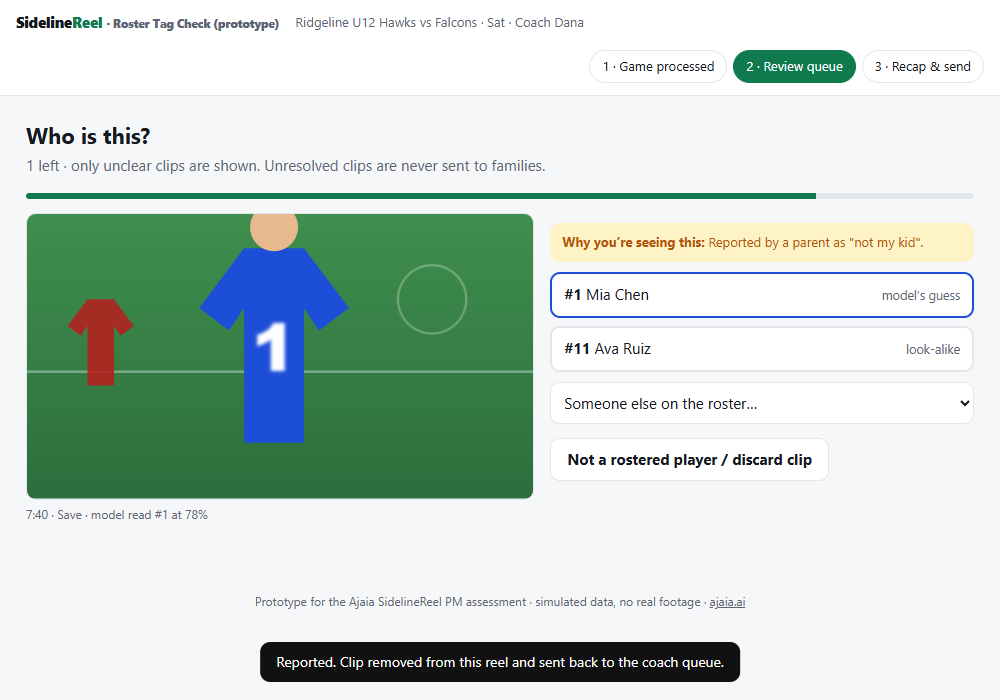
| CLICK / DO | Click “Simulate Sunday 6 PM send”. |
|---|---|
| WHAT HAPPENS | The banner confirms the recap was sent to families. The button changes to “Sent” and the “Not my kid” buttons disappear. |
| SAY | That’s the happy path. |
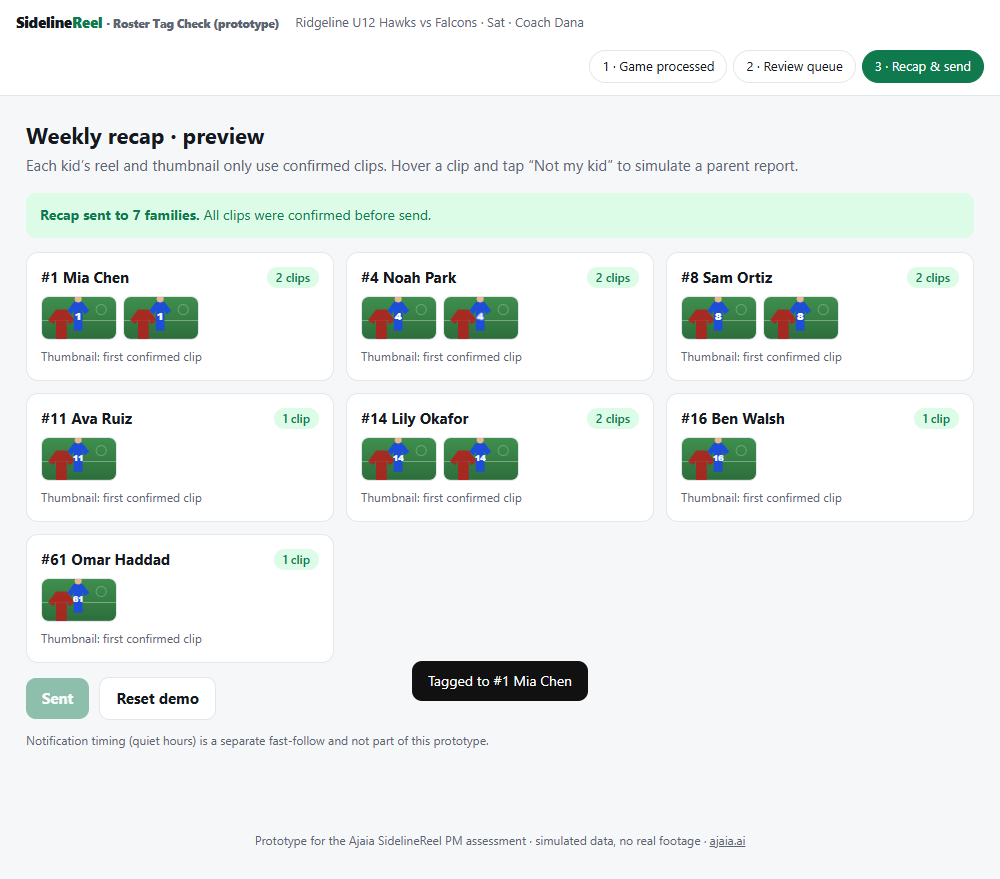
| CLICK / DO | Click “Reset demo”, then “3 · Recap & send” at top right, then “Simulate Sunday 6 PM send”. |
|---|---|
| WHAT HAPPENS | The recap shows a yellow banner: 6 clips held. After sending, the banner says unresolved clips were left out and the coach is reminded. |
| SAY | This is the most important rule. If the coach doesn’t review, we send the confirmed clips only. We never guess. The worst case is a thinner reel, not a wrong-kid reel. |
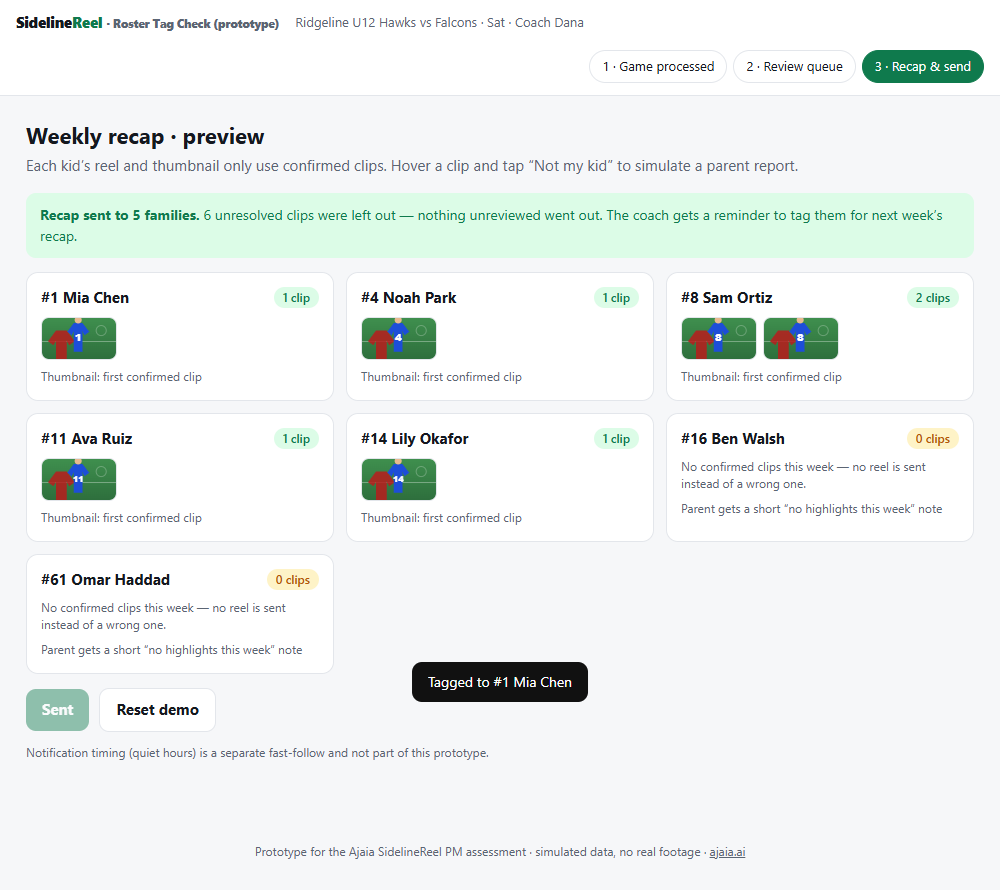
On screen: go back to camera large. Keep it personal and specific.
To recap: I’d build roster-tag confidence with a coach confirm step. I’d say no to livestreaming for Ridgeline this cycle and tell them honestly why, while giving them a concrete fix, a pilot slot, and a conversation about what their board really needs. If new evidence shows up, I’ll change my mind; volume of asking alone won’t do it.
I used AI throughout to read the materials, draft the spec, and build the prototype. I kept the decisions human, and I checked the dashboard number myself: the 92% is really about 64%.
A bit about me: [YOUR BACKGROUND IN 2–3 SENTENCES — roles, products you’ve shipped, what you’re good at].
Why this role: [1–2 SENTENCES]. Why Ajaia: [1–2 SENTENCES — something specific you noticed about Ajaia at ajaia.ai].
My salary expectation for this role is [YOUR SALARY]. Thank you for watching.